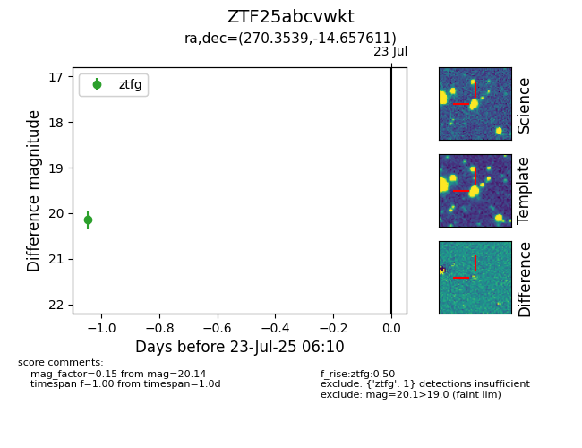

Target ZTF25abcvwkt at 2025-07-23 12:37, see:
FINK: fink-portal.org/ZTF25abcvwkt
Lasair: lasair-ztf.lsst.ac.uk/objects/ZTF25abcvwkt
ALeRCE: alerce.online/object/ZTF25abcvwkt
alt names
ZTF25abcvwkt (ztf,fink)
coordinates:
equatorial (ra, dec) = (270.3539,-14.65761)
galactic (l, b) = (14.1758,+4.07481)
photometry
last ztfg=20.14
1 ztfg detections
